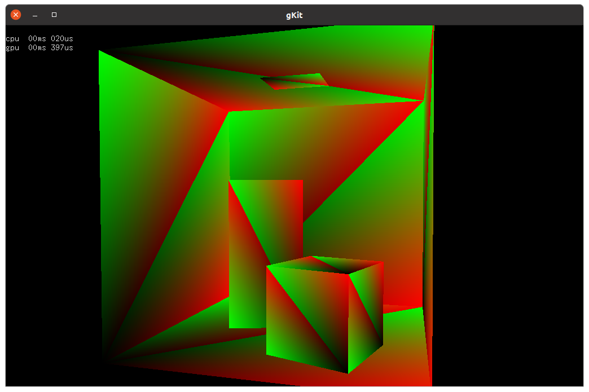
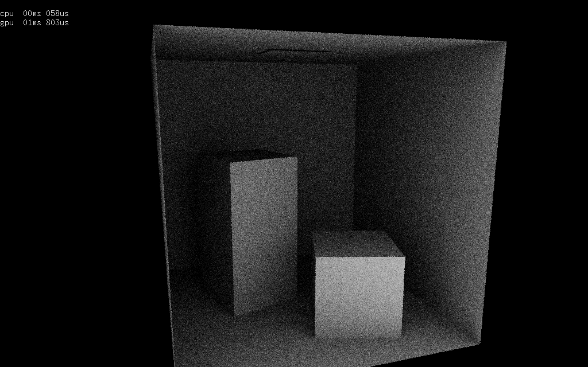
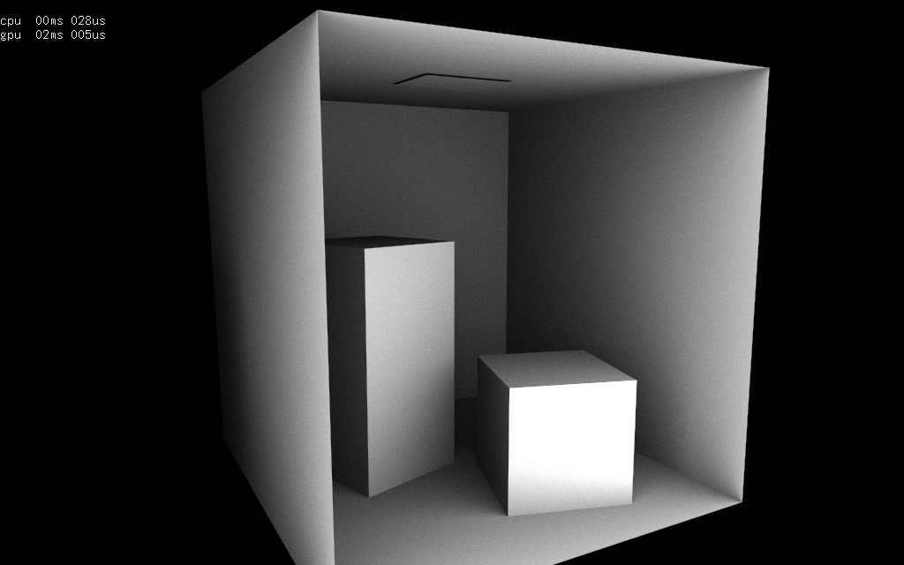

Partie 1 : préparation - compute shaders, storage buffers et
storage textures
regardez le fonctionnement de tutos/M2/tuto_raytrace_fragment.cpp
et son fragment shader : tutos/M2/raytrace.glsl
que faut-il modifier pour en faire une version compute shader ?
le compute shader doit construire un rayon pour chaque pixel de
l'image et ensuite calculer la plus petite intersection de ce
rayon avec les triangles de la scene.
quelles sont les entrees / sorties du shader ?
quels objets openGL faut-il initialiser pour chaque entrée, et
chaque sortie (pour stocker les résultat du compute shader) ?
rappels : compute shaders, uniform buffers, (shader)
storage buffers, textures, et storage textures / images
comme discuté pendant le cours, il y a au moins 2 organisations
possibles pour écrire et exécuter le compute shader : soit la
boucle sur les rayons est parallélisée, soit c'est la boucle sur
les triangles. pour commencer, il est plus simple d'utiliser la
1ère solution, paralléliser la boucle sur les rayons.
dernière question : comment utiliser gl_GlobalInvocationID,
l'indice du thread pour choisir quel pixel calculer ?

Partie 2 : plus de rayons...

et si on calculait, un truc plus rigolo ? comme l'éclairage
ambiant ? vous pouvez relire les explications sur comment
faire les calculs, dans l'exercice 7 du tp précédent.
là encore, il y a plusieurs solutions pour organiser les
calculs :
- solution directe : un thread calcule l'intersection du
rayon primaire (celui du pixel) et ensuite construit
plusieurs rayons et calcule leurs intersections pour
estimer l'éclairage ambiant. un seul compute shader fait
tout le travail.
- solution découpée : chaque étape du calcul est réalisée
par un compute shader différent : génération rayon
primaire, intersection rayon, génération rayons indirects,
intersection rayons indirects et accumulation du résultat
dans l'image. chaque shader écrit ses résultat dans un
buffer, qui est relu par le shader qui réalise l'étape
suivante.
quelles sont, a priori, les avantages et inconvénients de
ces 2 solutions extrèmes ? sur un cpu ? sur un gpu ? quels
problèmes peuvent se produire pour les shaders sur un gpu ?
comment contourner les limites d'ordonnancement et
d'exécution des processeurs du gpu ? peut-on limiter le
nombre de fois ou chaque triangle est chargé par un
sous-groupe, un groupe de threads ?
peut-on imaginer une situation qui fonctionnera mieux avec
la solution 1 ou la solution 2 ?
proposez une solution plus subtile que ces 2 versions. quel
est votre raisonnement pour justifier que votre solution est
a priori plus interressante ?
pour garder un affichage interactif, il faudra rester
raisonnable sur le nombre de rayons utilisés pour estimer
l'éclairage ambiant, 4 directions par exemple... mais le
résultat sera moche...
indication : avant de jouer avec les générateurs de
nombres aléatoires sur gpu, utilisez une spirale de
Fibonacci pour construire des directions sur l'hemisphere.
rappel : vous aurez aussi besoin de constuire un
repère pour générer les rayons indirects. utilisez la
construction du tp précédent.
mais attention : la fonction copysign de GLSL
semble bugguée sur pas mal de drivers, utilisez un test
direct à la place:
float sign= n.z
< 0 ? -1 : 1;
// au lieu de sign=
std::copysign(1.0f, n.z);
float a= -1.0 / (sign + n.z);
float d= n.x * n.y * a;
vec3 t= vec3(1.0 + sign * n.x * n.x * a, sign * d, -sign *
n.x);
vec3 b= vec3(d, sign + n.y * n.y * a, -n.y);
commencez par écrire la version directe. et comparez avec
votre solution...
Partie 3 : trop de rayons...

L'intégration numérique a besoin de trop d'échantillons / de
rayons pour recalculer brutalement chaque image et garder un
temps d'affichage interactif. Il est relativement simple de
découper le problème : chaque exécution du shader calcule une
partie du résultat et accumule petit à petit les N échantillons.
Le temps total de calcul ne change pas, mais l'application peut
rester interactive.
Lorsque la camera (ou les objets, ou les sources...) se déplace,
il suffit de repartir de zero, sans attendre la fin du calcul
des N échantillons.
pour les curieux : c'est quand meme dommage de jeter tous
les calculs lorsque la camera bouge... une idée pour continuer à
utiliser les calculs déjà fait, dans les zones qui ne changent
pas ou peu, consiste à identifier les points de la scène qui
sont toujours visibles dans la nouvelle image et à re-utiliser
leur valeur. Pour les autres points, il faudra repartir de zero
(ou d'une valeur moyenne des pixels voisins qui restent
valides).
Ce principe d'accumulation temporelle est utilisé quasiment
partout, cf
"TAA
/ Temporal Supersampling", M. Salvi, GDC 2016 et
"Temporal
Reprojection Anti-Aliasing in INSIDE", Playdead, GDC 2016
intermède : génération de nombres aléatoires, sur cpu ou gpu
Comment générer des nombres aléatoires ?
La solution la plus simple est d'utiliser un
générateur
linéaire : x
n+1= (ax
n + b) % m, et
de choisir de
"bonnes"
valeurs pour a, b, et m, (et x
0, bien sur)
utilisez celles de la glibc par exemple (ou un générateur 32bits
dans tous les cas)
Reste un détail : comment paralléliser le générateur ? il faut
obtenir une séquence de nombres aléatoires différente par pixel
?
Une solution directe utilise une valeur x
0 différente
pour chaque pixel, mais rien ne garanti que les séquences
générées pour des pixels voisins seront indépendantes...
Il suffit de se rendre compte que lorsque l'on calcule une image
de manière séquentielle, chaque pixel utilise une séquence de
termes de la série aléatoire. Le pixel (0, 0) utilise les termes
0 à N, le pixel suivant, les termes N à 2N, etc. Il ne reste
plus qu'à trouver comment calculer la valeur de x
pN
pour obtenir les termes x
pN à x
(p+1)N de
chaque pixel p de l'image. Les générateurs de la stl ne
fournissent pas une version utilisable de cette fonctionnalité,
mais bien sur, il y a une solution.
On peut reformuler x
n= (ax
n-1 + b) % m =
(a
nx
0 + b (a
n-1) / (a-1)) % m.
On peut calculer le terme x
n directement en fonction
de x
0, sans évaluer les N termes successivement. Mais
le calcul n'est pas direct, on ne peut pas représenter la valeur
a
n. Mais comme tous les calculs sont fait modulo m,
il y a quand même une solution, cf
"Random
Number Generation with Arbitrary Strides", 1994, F. Brown.
Voici une classe RNG simplifiée qui inclut cette fonctionnalité
:
struct RNG
{
unsigned int x;
unsigned int x0;
RNG( const unsigned int seed ) : x(seed), x0(seed) {}
// glibc
static const unsigned int a= 1103515245;
static const unsigned int b= 12345;
static const unsigned int m= 1u << 31;
float sample( ) // renvoie un reel aleatoire dans [0 1]
{
x= (a*x + b) % m;
return float(x) / float(m);
}
unsigned int index( const size_t i ) // prepare la generation du terme i
{
unsigned int cur_mul= a;
unsigned int cur_add= b;
unsigned int acc_mul= 1u;
unsigned int acc_add= 0u;
size_t delta= i;
while(delta)
{
if(delta & 1u)
{
acc_mul= acc_mul * cur_mul;
acc_add= acc_add * cur_mul + cur_add;
}
cur_add= cur_mul * cur_add + cur_add;
cur_mul= cur_mul * cur_mul;
delta= delta >> 1u;
}
x= acc_mul * x0 + acc_add;
return x;
}
};
int main()
{
RNG rng(1);
for(int i= 0; i < 10; i++)
// implicite :
rng.index(i);
printf("%f\n",
rng.sample());
// affiche les 10 premiers termes dans
l'ordre
for(int i= 9; i >= 0; i--)
{
rng.index(i);
// affiche les memes
valeurs dans un ordre different
printf("%f\n", rng.sample());
}
// copie un generateur
unsigned int seed=
rng.index(9);
// recupere l'etat permettant de generer
le terme 9
RNG tmp(seed);
printf("%f\n",
tmp.sample());
// genere le terme 9
avec un autre generateur
return 0;
}
pour les curieux : on peut aussi utiliser une autre
famille de générateurs,
pcg,
une évolution des générateurs linéaires, qui ajoute une
transformation après le calcul de x
n+1. Les variantes
utilisables dans un shader (état interne sur 32bits) sont
décrites sur
pcg-random.org
Utilisez RNG::index() pour générer le premier terme de la
séquence aléatoire de chaque pixel. Pour les autres termes du
pixel, il suffit d'utiliser le générateur "normalement", cf
RNG::sample(). Vous pouvez vérifier que tout fonctionne en
modifiant votre tp précédent (remplacez les générateurs de la
stl par la classe RNG).
Utilisez RNG::index() pour initialiser le générateur linéaire de
chaque pixel. le shader n'évaluera que l'équivalent de
RNG::sample() pour générer les nombres aléatoires nécéssaires
pour calculer l'éclairage ambiant du pixel.
Comment transmettre au shader l'état du générateur de chaque
pixel ? Ecrivez également la fonction sample() dans votre
shader. Faut-il aussi stocker l'état du générateur à la fin de
l'exécution du shader ?
Partie 4 : trop de triangles
... à venir. vous pouvez regarder le sujet de l'année précédente
pour vous faire une idée.